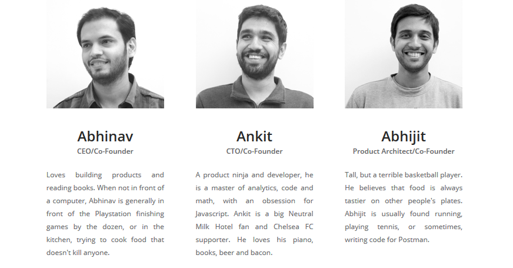

postman简单介绍
1、作用
3+ million developers use Postman to share, test, document & monitor APIs.
2、简介
Software development is hard. API development doesn’t need to be.
The Postman toolchain can help to build software that is useful across various use cases ranging from a single developer to an enterprise. We are building for the future where everything is going to be connected.
The Postman free app was created as a side project, and first introduced in October 2012. It grew quickly to become one of the most popular apps on the Chrome store, and expanding to Mac, Windows, and Linux native apps. Today we have 3+ million developers using our apps, worldwide. In 2014, we started the company to support the free app and develop more extensive features for a Saas product, which has become Postman Pro (introduced in 2016), and Postman Enterprise (targeted for early 2017). People know us as Postman, but we also answer to our formal company name, Postdot Technologies.
开始与2012,2014开始云服务，2016年有了Postman Pro，2017年开始的Postman Enterprise，我们相识于postman，相知于Postdot Technologies.
3、开发团队

说点感想：还有其他的成员我没有将照片发出来，其实都一样都是印度的朋友，一个
4、人家也有风投
Nexus Venture Partners is a leading venture capital fund with offices in US and India and more than $1 billion under management. Nexus invests in early and early growth stage companies. Nexus’s portfolio consists of category leading companies like Druva, Helpshift, Snapdeal among several others.